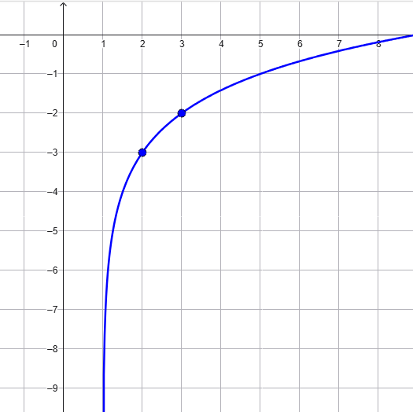

Soluzione
L'equazione è risolta per \(x = \dfrac{1}{4}\) e \(x = 8\).
Esercizio
\[
ln(x + 5) - ln(3x - 2) = \dfrac{1}{2}
\]
Soluzione:
L'equazione è risolta per \(\,\,\, x = \dfrac{2\sqrt{e}+5}{3\sqrt{e}-1}\).
Esercizio
Stabilire la legge della funzione logaritmica rappresentata nel grafico

Soluzione:
La funzione è definita dalla legge \(f(x) = log_{_2}(x - 1) - 3\)
Esercizio
Rappresentare i grafici delle funzioni
\[
f(x) = log_{_3}(x - 1) + 2 \qquad g(x) = log_{_3}(x + 5) + 1
\]
Stabilire la coordinata \(x\) del punto di intersezione tra i grafici di \(f\) e \(g\).
Soluzione:
La coordinata \(x\) del punto di intersezione tra i grafici è \(x = 4\).